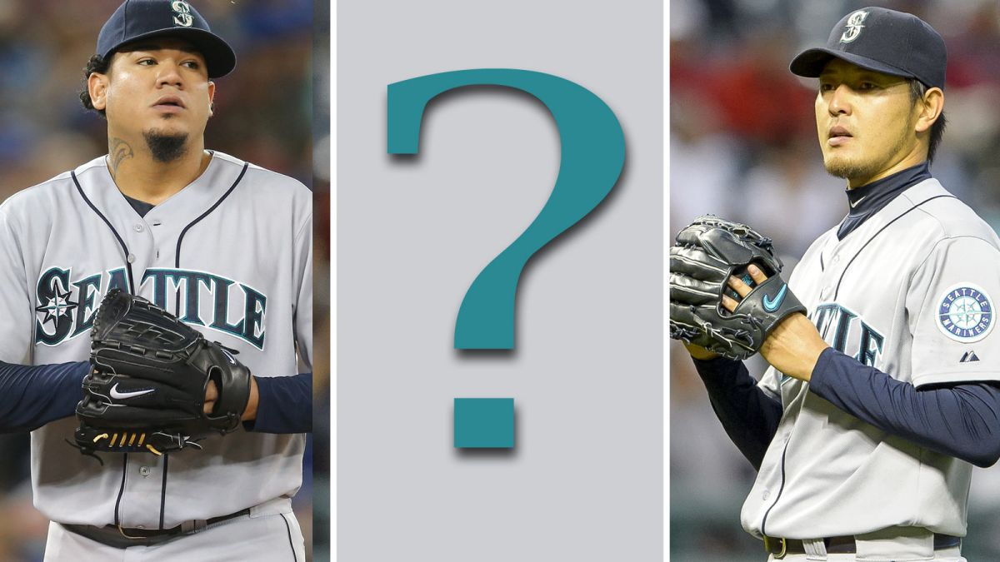

The idea here is to guess the amount of wins the Seattle Mariners will end up with after a short 162-game season
Use this area to log hints that are based off the user's guesses
| AL West Standings | Wins | Loss | Win Percentage | Games Back |
|---|---|---|---|---|
| Houston Astros | 60 | 49 | .550 | - | LA Angels of Anaheim | 57 | 50 | .533 | 2.0 |
| Texas Rangers | 54 | 53 | .505 | 5.0 |
| Seattle Mariners | 50 | 59 | .459 | 10.0 | Oakland Athletics | 48 | 61 | .440 | 12.0 |
Use this area to log the amount of guesses the user has submitted
Use this area to show the guesses the user has entered
Enter your information to receive more painful years of Seattle baseball. Wondering how to submit your information? Me too, this will be added later this week.